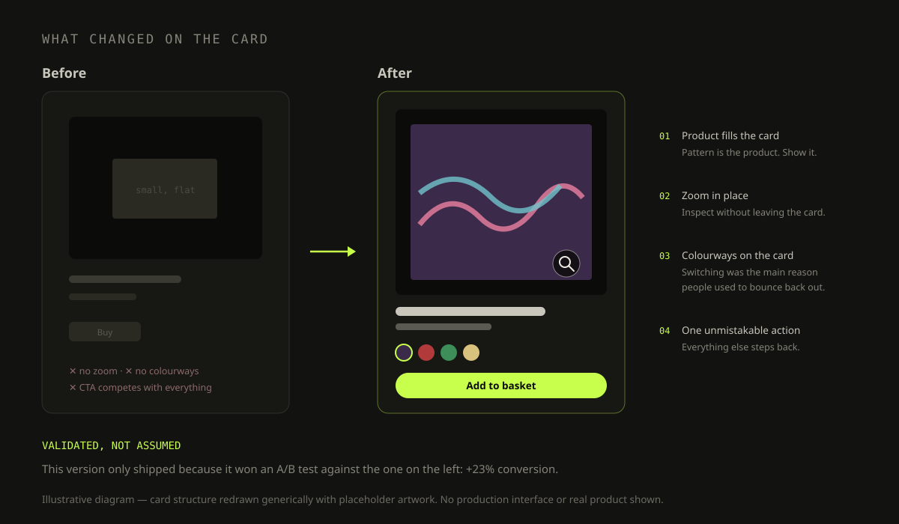

Redesigning Desigual's Product Card on the PDP
Optimizing Product Presentation to Boost Conversion Rates

I led the redesign of Desigual's product card on their e-commerce platform.
The goal was to create a more engaging and user-friendly interface that would enhance the shopping experience and increase conversion rates.
Desigual's existing product card lacked visual appeal and intuitive navigation, leading to user frustration and lower sales. The design failed to effectively highlight product features and guide users toward making a purchase.
- The card showed the garment small and flat — on a brand whose entire proposition is pattern and colour.
- There was no way to inspect anything: no zoom, no switching colourway without leaving the card.
- The essentials were not available at a glance, so shoppers had to dig to find out what the product actually was.
- The call to action did not stand out, which left the path from interest to basket unclear.
Redesign the product card to improve visual appeal, usability, and user engagement, ultimately increasing conversion rates.
- Conduct user research to identify pain points and gather insights.
- Collaborate with cross-functional teams to develop wireframes and prototypes.
- Design a clean and intuitive product card that highlights product features and facilitates easy navigation.
User interviews and usability testing. Conducted to identify pain points and gather insights into user behavior.
User feedback analysis. Analyzed to understand the key areas for improvement in the existing product card.
Design. Developed wireframes and prototypes in collaboration with cross-functional teams, focusing on a clean and intuitive design, designed a visually appealing product card with high-quality images to showcase products effectively, clear product descriptions to provide essential information at a glance, and prominent call-to-action buttons to guide users toward making a purchase, and implemented interactive elements, such as zoom-in capabilities and color selection options, to enhance user engagement.
Implementation. Collaborated with development teams to implement the redesigned product card, and conducted A/B testing to validate the effectiveness of the new design.

The interactive elements and high-quality visuals captured users' attention and encouraged engagement.
A/B tested against the previous product card on live traffic — the redesign was rolled out only after it won.
The clean design and intuitive navigation enhanced the overall shopping experience.
- On a brand built on print and colour, zoom and colour switching were not embellishments — they were the product information.
- The A/B test is what made the redesign defensible. Without it, 23% would have been a story about my taste.
- Setting the test up with the e-commerce analytics team is the only reason the number means anything.